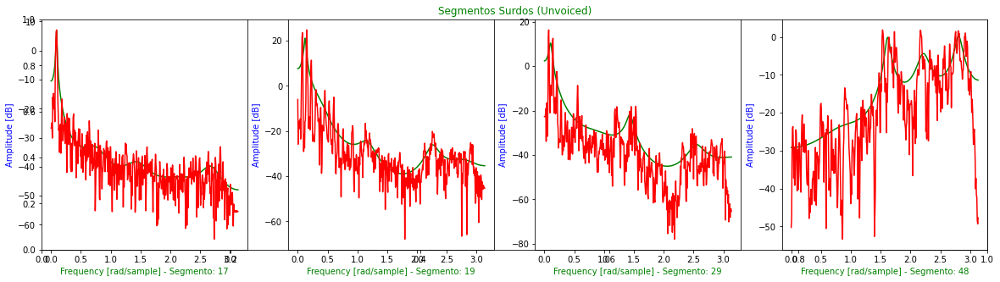

Codificação de Voz e Áudio
Codificação de Sinais Multimídia - Laboratório 7
Primeiramente, os trabalhos com o Google Colab foram iniciados. Entre os principais objetivos temos: Determinar os parâmetros LPC; realização da separação Sonora/Surda; Espectro e Envoltória LP; Estimar f0 e Pitch.
Mayara
Arquivo de Áudio Utilizado
Forma de Onda: Primeira Estrofe
Cálculo dos Parâmetros LPC, Separação U/UV e Espectro + Envoltória LPC
Para esta seção, os seguintes valores foram encontrados:
- Limiar VAD 34.42
- Limiar U/UV 37.12
- Sonoros = 7
- Surdos = 4
Energia da Voz: 1ª Estrofe
Segmentos Sonoros
Segmentos Surdos

Estimação da f0 e do Pitch
Trajetória da f0 (tempo [s] x Hz)
Trajetória do Pitch (tempo [s] x ms)
Espectograma Enfatizando a f0